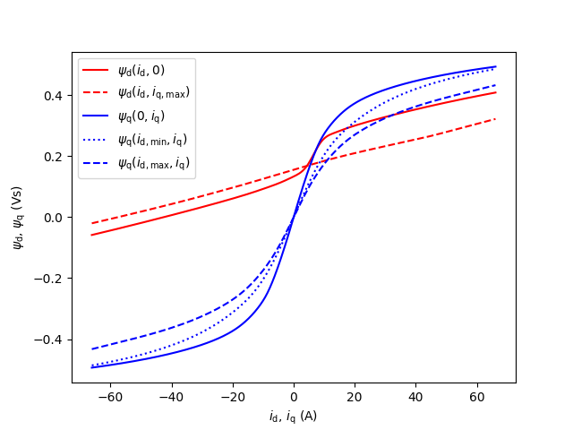
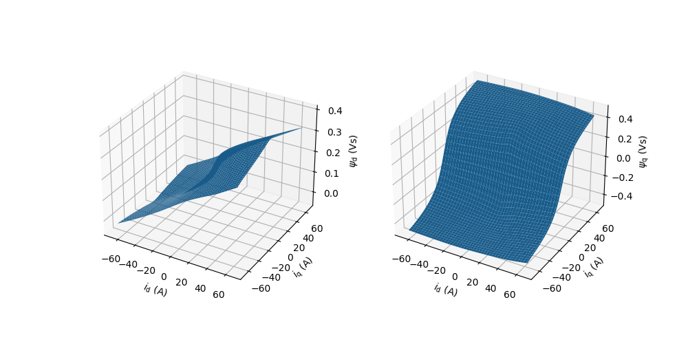

Note
Go to the end to download the full example code.
5-kW PM-SyRM, flux maps from SyR-e#
This example simulates observer-based V/Hz control of a saturated 5-kW permanent-magnet synchronous reluctance motor. The flux maps of this example motor, known as THOR, are from the SyR-e project:
The SyR-e project has been licensed under the Apache License, Version 2.0. We acknowledge the developers of the SyR-e project. The flux maps from other sources can be used in a similar manner. It is worth noticing that the saturation is not taken into account in the control method, only in the system model. Naturally, the control performance could be improved by taking the saturation into account in the control algorithm.
Imports.
from os import path
import inspect
import numpy as np
from scipy.optimize import minimize_scalar
from scipy.interpolate import LinearNDInterpolator
from motulator import model, control
from motulator import BaseValues, Sequence, plot
Compute base values based on the nominal values (just for figures).
base = BaseValues(
U_nom=220, I_nom=15.6, f_nom=85, tau_nom=19, P_nom=5.07e3, n_p=2)
Load and plot the flux maps.
# Get the path of this file
p = path.dirname(path.abspath(inspect.getfile(inspect.currentframe())))
# Load the data from the MATLAB file
data = model.sm.import_syre_data(p + "/THOR.mat")
# You may also downsample or invert the flux map by uncommenting the following
# lines. Not needed here, but these methods could be useful for other purposes.
# from motulator.model.sm_flux_maps import downsample_flux_map, invert_flux_map
# data = downsample_flux_map(data, N_d=32, N_q=32)
# data = invert_flux_map(data, N_d=128, N_q=128)
model.sm.plot_flux_vs_current(data)
model.sm.plot_flux_map(data)
- 
- 
Create the saturation model.
# The coordinates assume the PMSM convention, i.e., that the PM flux is along
# the d-axis. The piecewise linear interpolant `LinearNDInterpolator` is based
# on triangularization and allows to use unstructured flux maps.
# Data points for creating the interpolant
psi_s_data = np.asarray(data.psi_s).ravel()
i_s_data = np.asarray(data.i_s).ravel()
# Create the interpolant, i_s = current_dq(psi_s.real, psi_s.imag)
current_dq = LinearNDInterpolator(
list(zip(psi_s_data.real, psi_s_data.imag)), i_s_data)
# Solve the PM flux for the initial value of the stator flux
res = minimize_scalar(
lambda psi_d: np.abs(current_dq(psi_d, 0)),
bounds=(0, np.max(psi_s_data.real)),
method="bounded")
psi_s0 = complex(res.x)
# Package the input such that i_s = i_s(psi_s)
def i_s(psi_s):
"""Current as a function of the flux linkage."""
return current_dq(psi_s.real, psi_s.imag)
Configure the system model.
# Create the motor model
machine = model.sm.SynchronousMachineSaturated(
n_p=2, R_s=.2, current=i_s, psi_s0=psi_s0)
# Magnetically linear PM-SyRM model
# machine = model.sm.SynchronousMachine(
# n_p=2, R_s=.2, L_d=4e-3, L_q=17e-3, psi_f=.134)
mechanics = model.Mechanics(J=.0042)
converter = model.Inverter(u_dc=310)
mdl = model.sm.Drive(machine, mechanics, converter)
Configure the control system.
par = control.sm.ModelPars(n_p=2, R_s=.2, L_d=4e-3, L_q=17e-3, psi_f=.134)
ctrl_par = control.sm.ObserverBasedVHzCtrlPars(par, i_s_max=2*base.i)
ctrl = control.sm.ObserverBasedVHzCtrl(par, ctrl_par, T_s=250e-6)
Set the speed reference and the external load torque.
# Speed reference
times = np.array([0, .125, .25, .375, .5, .625, .75, .875, 1])*8
values = np.array([0, 0, 1, 1, 0, -1, -1, 0, 0])*base.w
ctrl.w_m_ref = Sequence(times, values)
# Quadratic load torque profile (corresponding to pumps and fans)
k = base.tau_nom/(base.w/base.n_p)**2
mdl.mechanics.tau_L_w = lambda w_M: k*w_M**2*np.sign(w_M)
# Uncomment to try the rated load torque step at t = 1 s (set k = 0 above)
# times = np.array([0, .125, .125, .875, .875, 1])*8
# values = np.array([0, 0, 1, 1, 0, 0])*base.tau_nom
# mdl.mechanics.tau_L_t = Sequence(times, values)
Create the simulation object and simulate it.
sim = model.Simulation(mdl, ctrl)
sim.simulate(t_stop=8)
Plot results in per-unit values. By omitting the argument base you can plot the results in SI units.
plot(sim, base)
Total running time of the script: (0 minutes 32.489 seconds)